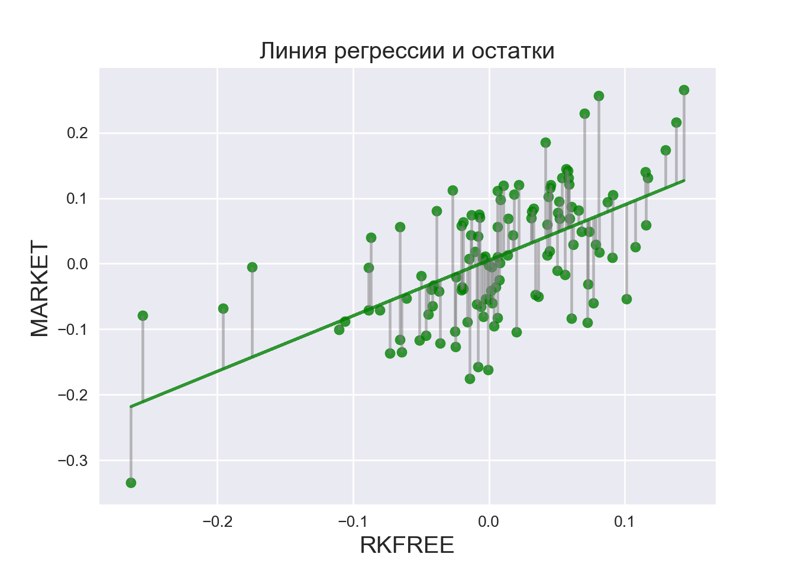
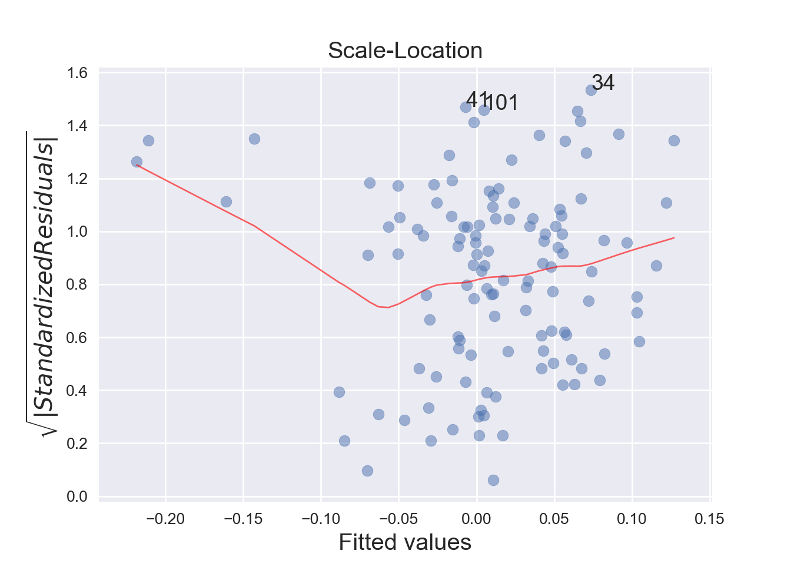

Коан 3 Коан о простой линейной регрессии
3.1 Python
Опять начинаем с импорта пакетов. Почти всегда джентельменский набор включает в себя pandas, numpy и matplotlib.pyplot. Много полезных функций для статистических расчетов можно найти в модуле Statsmodels.
import pandas as pd # работа с таблицами
import numpy as np # математические функции и матрицы
import matplotlib.pyplot as plt # графики
import seaborn as sns # еще более классные графики
import statsmodels.api as sm # стандартные регресионные модели
import statsmodels.formula.api as smf # аналогичные модели с синтаксисом в стиле R
import statsmodels.graphics.gofplots as gf # визуализация моделей
import statsmodels.discrete.discrete_model # дискретные модели
from statsmodels.stats.outliers_influence import summary_table # работа с выбросами
from scipy.stats import shapiro # тест Шапиро – Уилка При желании можем настроить графики по своему вкусу, изменив стиль и другие параметры шрифтов и графиков :)
plt.style.use('seaborn')
plt.rc('font', size=14)
plt.rc('figure', titlesize=15)
plt.rc('axes', labelsize=15)
plt.rc('axes', titlesize=15)Загрузим данные.
returns = pd.read_stata('../data/02_us_return.dta')Переименуем столбцы с «неговорящими» названиями :)
Параметр inplace=True здесь (и во многих других функциях) позволяет изменить объект, не возвращая его копию.
returns.rename(columns={'A':'n', 'B': 'date'}, inplace=True)Избавимся от наблюдений с пропущенными значениями.
returns.dropna(inplace=True)Как и прежде, рассмотрим CAPM модель :)
Оценим бэту для компании MOTOR.
Тогда зависимая переменная - разница доходностей акций MOTOR и безрискового актива (motor_premium), а регрессор - рыночная премия (market_premium).
returns['motor_premium'] = returns['MOTOR'] - returns['RKFREE']
returns['market_premium'] = returns['MARKET'] - returns['RKFREE'] Оценим модель и посмотрим на саммари :)
regr = smf.ols('motor_premium ~ market_premium', data=returns).fit()
regr.summary()<class 'statsmodels.iolib.summary.Summary'>
"""
OLS Regression Results
==============================================================================
Dep. Variable: motor_premium R-squared: 0.357
Model: OLS Adj. R-squared: 0.351
Method: Least Squares F-statistic: 65.48
Date: Sat, 18 Jan 2020 Prob (F-statistic): 5.91e-13
Time: 13:07:40 Log-Likelihood: 136.18
No. Observations: 120 AIC: -268.4
Df Residuals: 118 BIC: -262.8
Df Model: 1
Covariance Type: nonrobust
==================================================================================
coef std err t P>|t| [0.025 0.975]
----------------------------------------------------------------------------------
Intercept 0.0053 0.007 0.730 0.467 -0.009 0.020
market_premium 0.8481 0.105 8.092 0.000 0.641 1.056
==============================================================================
Omnibus: 2.684 Durbin-Watson: 2.030
Prob(Omnibus): 0.261 Jarque-Bera (JB): 1.780
Skew: -0.031 Prob(JB): 0.411
Kurtosis: 2.406 Cond. No. 14.6
==============================================================================
Warnings:
[1] Standard Errors assume that the covariance matrix of the errors is correctly specified.
"""Можем посчитать прогнозное значение.
returns['yhat'] = regr.fittedvalues # в R добавить для исходных, а сюда для новыхКрасивые графики для остатков, выборосов и прочих радостей, как в R, придется строить ручками. Зато приятно поиграть с оформлением :)
fig, ax = plt.subplots()
ax.plot(returns['x'],regr.fittedvalues, color='g', alpha=0.8)Error in py_call_impl(callable, dots$args, dots$keywords): KeyError: 'x'
Detailed traceback:
File "<string>", line 1, in <module>
File "C:\Users\DNS\ANACON~1\lib\site-packages\pandas\core\frame.py", line 2975, in __getitem__
indexer = self.columns.get_loc(key)
File "C:\Users\DNS\ANACON~1\lib\site-packages\pandas\core\indexes\base.py", line 2892, in get_loc
return self._engine.get_loc(self._maybe_cast_indexer(key))
File "pandas/_libs/index.pyx", line 107, in pandas._libs.index.IndexEngine.get_loc
File "pandas/_libs/index.pyx", line 131, in pandas._libs.index.IndexEngine.get_loc
File "pandas/_libs/hashtable_class_helper.pxi", line 1607, in pandas._libs.hashtable.PyObjectHashTable.get_item
File "pandas/_libs/hashtable_class_helper.pxi", line 1614, in pandas._libs.hashtable.PyObjectHashTable.get_itemax.scatter(returns['x'],regr.fittedvalues + regr.resid, color='g', alpha=0.8, s=40)Error in py_call_impl(callable, dots$args, dots$keywords): KeyError: 'x'
Detailed traceback:
File "<string>", line 1, in <module>
File "C:\Users\DNS\ANACON~1\lib\site-packages\pandas\core\frame.py", line 2975, in __getitem__
indexer = self.columns.get_loc(key)
File "C:\Users\DNS\ANACON~1\lib\site-packages\pandas\core\indexes\base.py", line 2892, in get_loc
return self._engine.get_loc(self._maybe_cast_indexer(key))
File "pandas/_libs/index.pyx", line 107, in pandas._libs.index.IndexEngine.get_loc
File "pandas/_libs/index.pyx", line 131, in pandas._libs.index.IndexEngine.get_loc
File "pandas/_libs/hashtable_class_helper.pxi", line 1607, in pandas._libs.hashtable.PyObjectHashTable.get_item
File "pandas/_libs/hashtable_class_helper.pxi", line 1614, in pandas._libs.hashtable.PyObjectHashTable.get_itemax.vlines(returns['x'],regr.fittedvalues,regr.fittedvalues + regr.resid, color='gray', alpha=0.5)Error in py_call_impl(callable, dots$args, dots$keywords): KeyError: 'x'
Detailed traceback:
File "<string>", line 1, in <module>
File "C:\Users\DNS\ANACON~1\lib\site-packages\pandas\core\frame.py", line 2975, in __getitem__
indexer = self.columns.get_loc(key)
File "C:\Users\DNS\ANACON~1\lib\site-packages\pandas\core\indexes\base.py", line 2892, in get_loc
return self._engine.get_loc(self._maybe_cast_indexer(key))
File "pandas/_libs/index.pyx", line 107, in pandas._libs.index.IndexEngine.get_loc
File "pandas/_libs/index.pyx", line 131, in pandas._libs.index.IndexEngine.get_loc
File "pandas/_libs/hashtable_class_helper.pxi", line 1607, in pandas._libs.hashtable.PyObjectHashTable.get_item
File "pandas/_libs/hashtable_class_helper.pxi", line 1614, in pandas._libs.hashtable.PyObjectHashTable.get_itemplt.title('Линия регрессии и остатки')
plt.xlabel('RKFREE')
plt.ylabel('MARKET')
plt.show()
Строим \(90\%\)-й доверительный интервал.
regr.conf_int(alpha = 0.1) 0 1
Intercept -0.006684 0.017189
market_premium 0.674382 1.021917И проведем F-test.
hypotheses = '(x = 1)'
regr.f_test(r_matrix = hypotheses)Error in py_call_impl(callable, dots$args, dots$keywords): PatsyError: unrecognized token in constraint
(x = 1)
^
Detailed traceback:
File "<string>", line 1, in <module>
File "C:\Users\DNS\ANACON~1\lib\site-packages\statsmodels\base\model.py", line 1648, in f_test
res = self.wald_test(r_matrix, cov_p=cov_p, invcov=invcov, use_f=True)
File "C:\Users\DNS\ANACON~1\lib\site-packages\statsmodels\base\model.py", line 1719, in wald_test
LC = DesignInfo(names).linear_constraint(r_matrix)
File "C:\Users\DNS\ANACON~1\lib\site-packages\patsy\design_info.py", line 536, in linear_constraint
return linear_constraint(constraint_likes, self.column_names)
File "C:\Users\DNS\ANACON~1\lib\site-packages\patsy\constraint.py", line 403, in linear_constraint
tree = parse_constraint(code, variable_names)
File "C:\Users\DNS\ANACON~1\lib\site-packages\patsy\constraint.py", line 237, in parse_constraint
return infix_parse(_tokenize_constraint(string, variable_names),
File "C:\Users\DNS\ANACON~1\lib\site-packages\patsy\constraint.py", line 196, in _tokenize_constraint
Origin(string, offset, offset + 1))Тест Шапиро - Уилка. Такой же, как и в R.
W, p_value = shapiro(regr.resid)Генерируем новые данные и строим предсказание.
import random
random.seed(7)
new_data = returns['x'] + 0.5 * np.random.normal(len(returns))Error in py_call_impl(callable, dots$args, dots$keywords): KeyError: 'x'
Detailed traceback:
File "<string>", line 1, in <module>
File "C:\Users\DNS\ANACON~1\lib\site-packages\pandas\core\frame.py", line 2975, in __getitem__
indexer = self.columns.get_loc(key)
File "C:\Users\DNS\ANACON~1\lib\site-packages\pandas\core\indexes\base.py", line 2892, in get_loc
return self._engine.get_loc(self._maybe_cast_indexer(key))
File "pandas/_libs/index.pyx", line 107, in pandas._libs.index.IndexEngine.get_loc
File "pandas/_libs/index.pyx", line 131, in pandas._libs.index.IndexEngine.get_loc
File "pandas/_libs/hashtable_class_helper.pxi", line 1607, in pandas._libs.hashtable.PyObjectHashTable.get_item
File "pandas/_libs/hashtable_class_helper.pxi", line 1614, in pandas._libs.hashtable.PyObjectHashTable.get_itemprediction = regr.predict(new_data)Error in py_call_impl(callable, dots$args, dots$keywords): NameError: name 'new_data' is not defined
Detailed traceback:
File "<string>", line 1, in <module>А теперь жесть! Построим графички, похожие на plot() R.
fig_1 = plt.figure(1)
fig_1.axes[0] = sns.residplot(returns['x'], returns['y'],
lowess=True,
scatter_kws={'alpha': 0.6},
line_kws={'color': 'red', 'lw': 2, 'alpha': 0.8})Error in py_call_impl(callable, dots$args, dots$keywords): KeyError: 'x'
Detailed traceback:
File "<string>", line 1, in <module>
File "C:\Users\DNS\ANACON~1\lib\site-packages\pandas\core\frame.py", line 2975, in __getitem__
indexer = self.columns.get_loc(key)
File "C:\Users\DNS\ANACON~1\lib\site-packages\pandas\core\indexes\base.py", line 2892, in get_loc
return self._engine.get_loc(self._maybe_cast_indexer(key))
File "pandas/_libs/index.pyx", line 107, in pandas._libs.index.IndexEngine.get_loc
File "pandas/_libs/index.pyx", line 131, in pandas._libs.index.IndexEngine.get_loc
File "pandas/_libs/hashtable_class_helper.pxi", line 1607, in pandas._libs.hashtable.PyObjectHashTable.get_item
File "pandas/_libs/hashtable_class_helper.pxi", line 1614, in pandas._libs.hashtable.PyObjectHashTable.get_itemfig_1.axes[0].set_title('Residuals vs Fitted')Error in py_call_impl(callable, dots$args, dots$keywords): IndexError: list index out of range
Detailed traceback:
File "<string>", line 1, in <module>fig_1.axes[0].set_xlabel('Fitted values')Error in py_call_impl(callable, dots$args, dots$keywords): IndexError: list index out of range
Detailed traceback:
File "<string>", line 1, in <module>fig_1.axes[0].set_ylabel('Residuals')
# можем добавить метки потенциальных аутлаеровError in py_call_impl(callable, dots$args, dots$keywords): IndexError: list index out of range
Detailed traceback:
File "<string>", line 1, in <module>abs_resid = abs(regr.resid).sort_values(ascending=False)
abs_resid_top3=abs_resid[:3]
for i in abs_resid_top3.index:
fig_1.axes[0].annotate(i,
xy = (regr.fittedvalues[i],
regr.resid[i]))Error in py_call_impl(callable, dots$args, dots$keywords): IndexError: list index out of range
Detailed traceback:
File "<string>", line 2, in <module>norm_residuals = regr.get_influence().resid_studentized_internal # сохраним стьюдентизированные остатки
QQ = gf.ProbPlot(norm_residuals)
fig_2 = QQ.qqplot(line='45', alpha=0.5, color='b', lw=1)
fig_2.axes[0].set_title('Normal Q-Q')
fig_2.axes[0].set_xlabel('Theoretical Quantiles')
fig_2.axes[0].set_ylabel('Standardized Residuals');
#и снова метки
abs_norm_resid = np.flip(np.argsort(abs(norm_residuals)), 0)
abs_norm_resid_top3 = abs_norm_resid[:3]
for r, i in enumerate(abs_norm_resid_top3):
fig_2.axes[0].annotate(i,
xy=(np.flip(QQ.theoretical_quantiles, 0)[r],
norm_residuals[i]))
fig_3 = plt.figure(3)
plt.scatter(regr.fittedvalues, np.sqrt(abs(norm_residuals)), alpha=0.5)
sns.regplot(regr.fittedvalues, np.sqrt(abs(norm_residuals)),
scatter=False,
ci=False,
lowess=True,
line_kws={'color': 'red', 'lw': 1, 'alpha': 0.6})
fig_3.axes[0].set_title('Scale-Location')
fig_3.axes[0].set_xlabel('Fitted values')
fig_3.axes[0].set_ylabel('$\sqrt{|Standardized Residuals|}$')
# и еще раз!)
abs_sq_norm_resid = np.flip(np.argsort(np.sqrt(abs(norm_residuals)), 0))
abs_sq_norm_resid_top3 = abs_sq_norm_resid[:3]
for i in abs_sq_norm_resid_top3:
fig_3.axes[0].annotate(i, xy=(regr.fittedvalues[i],
np.sqrt(abs(norm_residuals)[i])))
leverage = regr.get_influence().hat_matrix_diag # сохраняем элементы матрицы-шляпницы
cook_dist = regr.get_influence().cooks_distance[0] # и расстояние Кука
fig_4 = plt.figure(4)
plt.scatter(leverage, norm_residuals, alpha=0.5)
sns.regplot(leverage, norm_residuals,
scatter=False,
ci=False,
lowess=True,
line_kws={'color': 'red', 'lw': 1, 'alpha': 0.8})
fig_4.axes[0].set_xlim(0, 0.20) # РАЗВЕСТИ НА ОТДЕЛЬНЫЕ ЧАНКИ ИЛИ MESSAGE = FALSE(0, 0.2)fig_4.axes[0].set_ylim(-3, 5)(-3, 5)fig_4.axes[0].set_title('Residuals vs Leverage')
fig_4.axes[0].set_xlabel('Leverage')
fig_4.axes[0].set_ylabel('Standardized Residuals')
leverage_top3 = np.flip(np.argsort(cook_dist), 0)[:3]
for i in leverage_top3:
fig_4.axes[0].annotate(i,
xy=(leverage[i],
norm_residuals[i]))
plt.show()